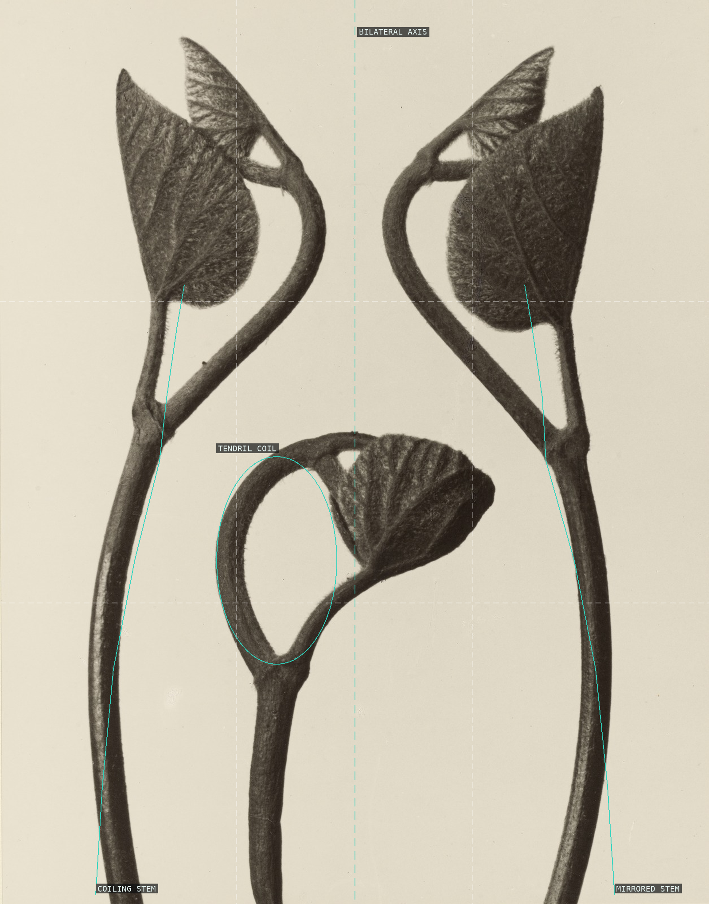
Bilateral specimen: two mirrored coiling stems flank a central vertical axis, with a tendril-coil crozier below.
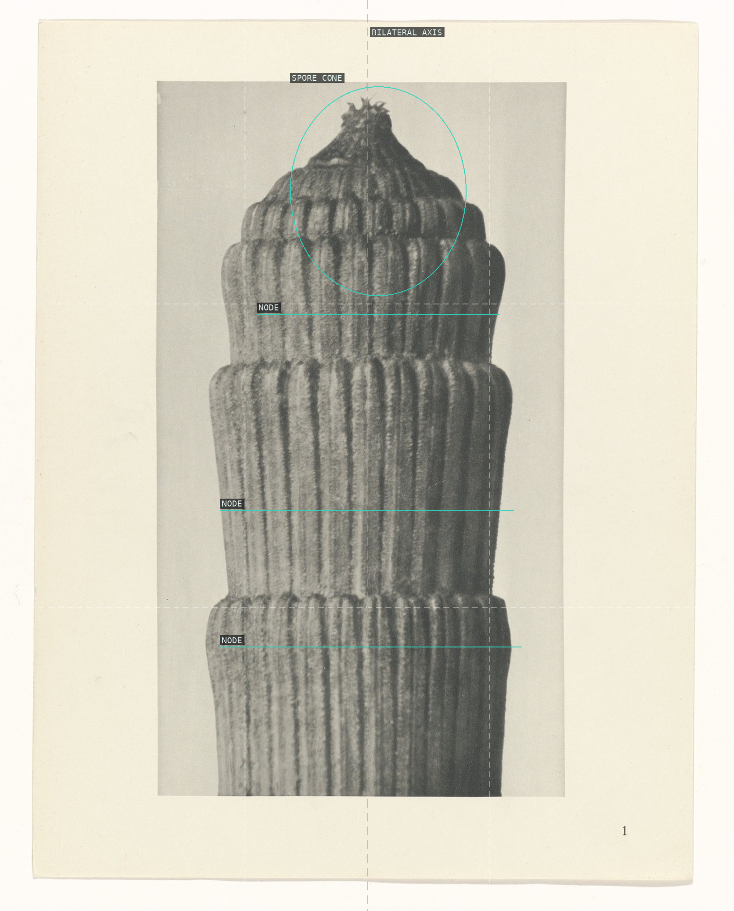
A jointed stem in strict bilateral symmetry: fluted segments stacked like a column and crowned by a terminal spore cone.
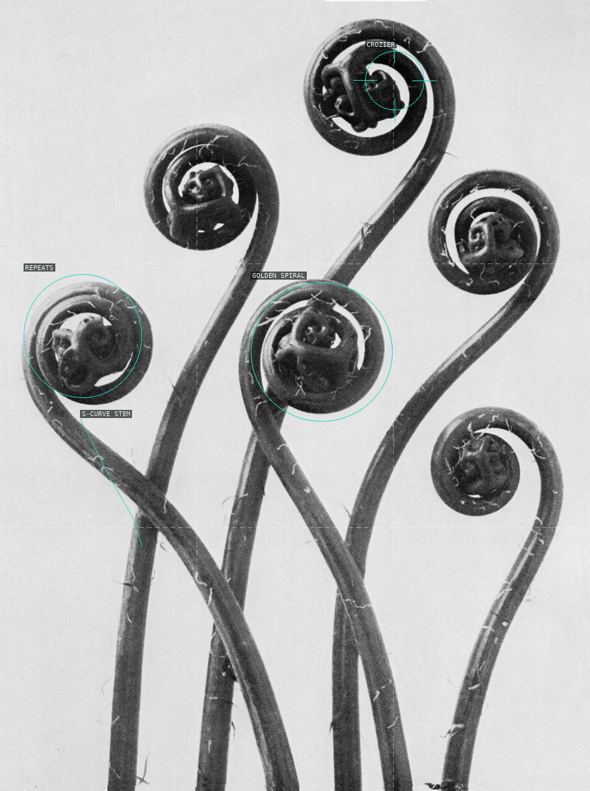
Six fern croziers repeat the logarithmic spiral, rising on S-curving stems from a common base; detector horizon and vanishing point are background false positives, dropped.
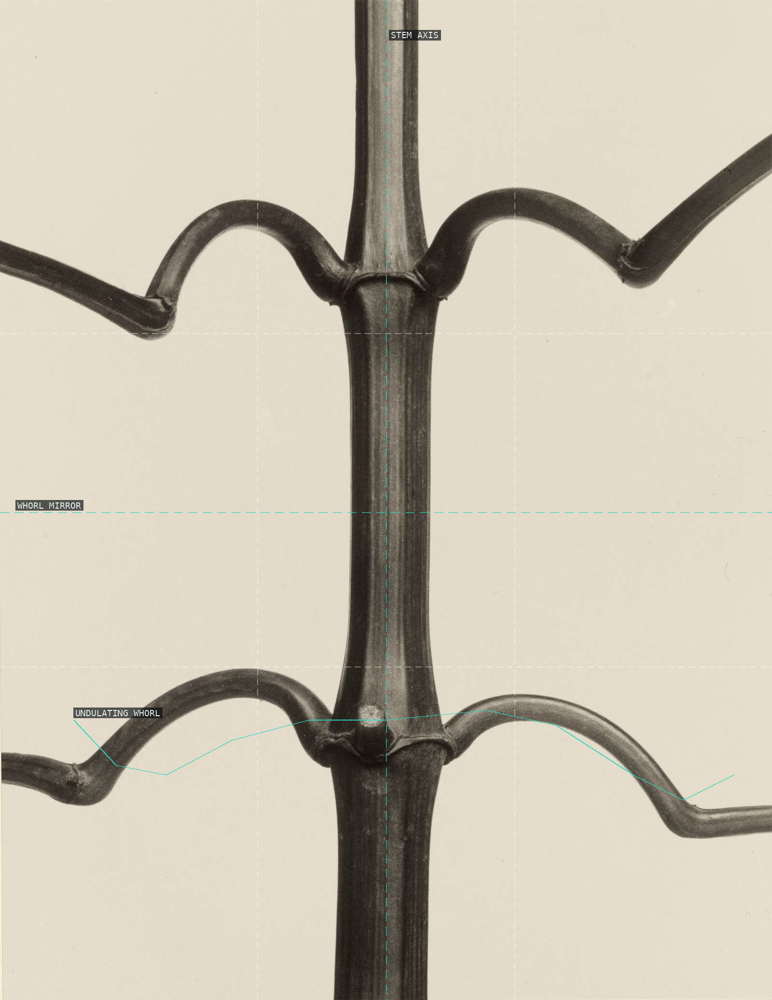
Impatiens as wrought-iron candelabra: a vertical spine (bilateral symmetry) carrying modular whorls of opposite, undulating branches mirrored top-to-bottom.
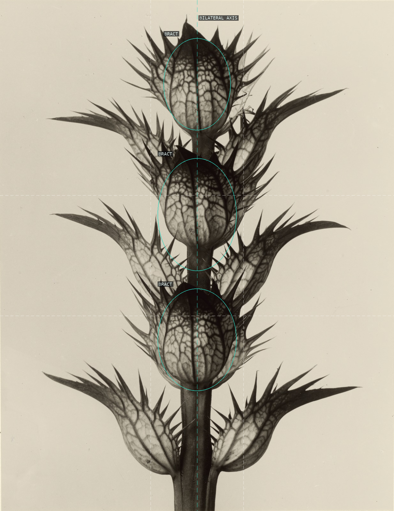
Bilateral mirror symmetry about the central axis; identical spiny bract modules stacked in rhythmic vertical repetition.
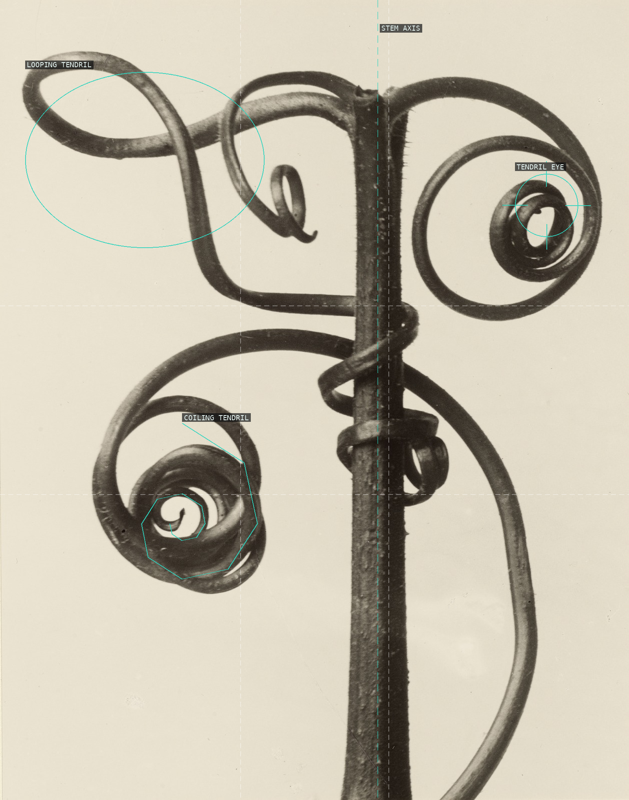
A straight vertical stem disciplines tendrils that coil off in every direction: a tight logarithmic spiral lower-left, a bright-eyed loop upper-right, a loose loop upper-left.
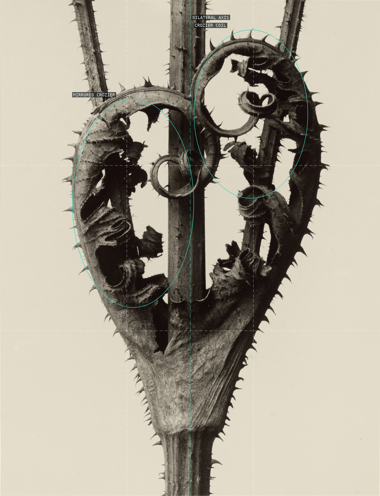
Central stem is the mirror line: two thorn-edged bracts inroll into crozier coils that answer each other across the bilateral axis.
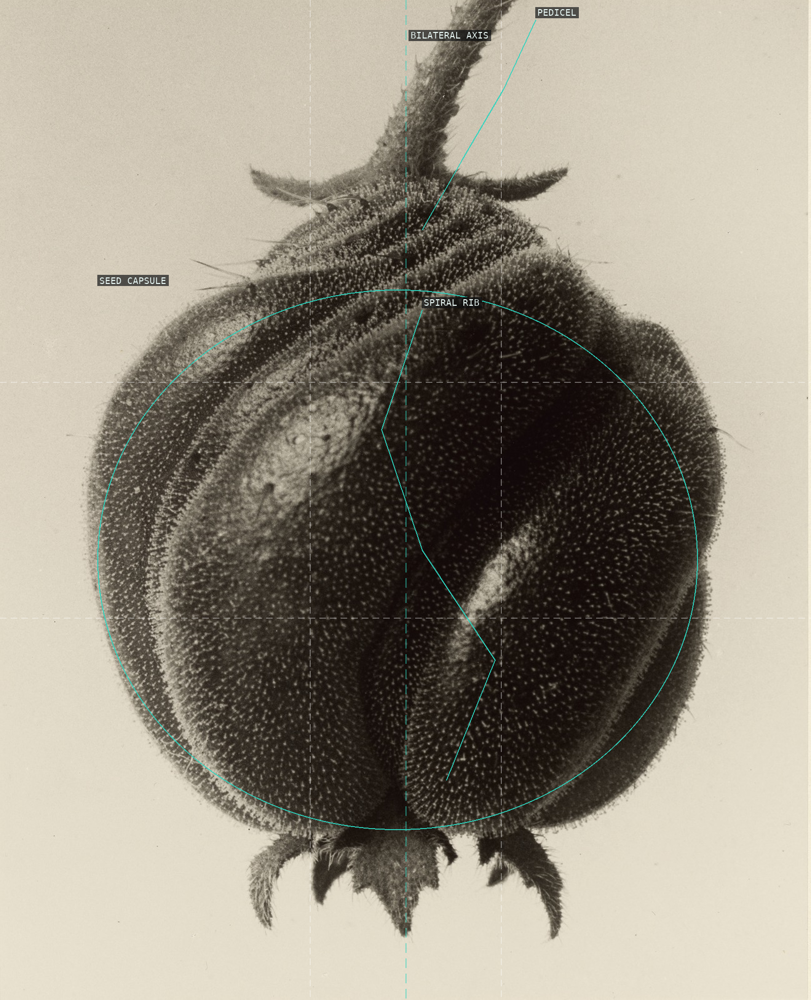
A pendant seed capsule hung from its pedicel: bilaterally symmetric about the central axis, its ribbed surface twisting in a spiral.
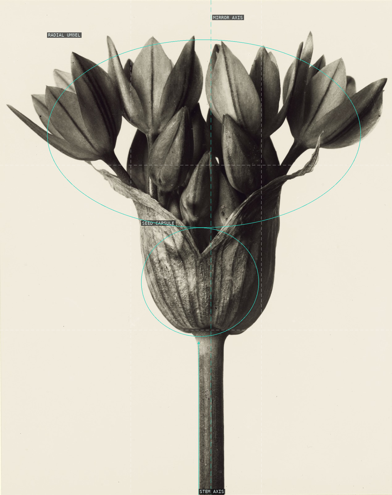
Bilateral mirror symmetry: one vertical stem rises to a ribbed capsule that opens into a broad radial umbel of buds.
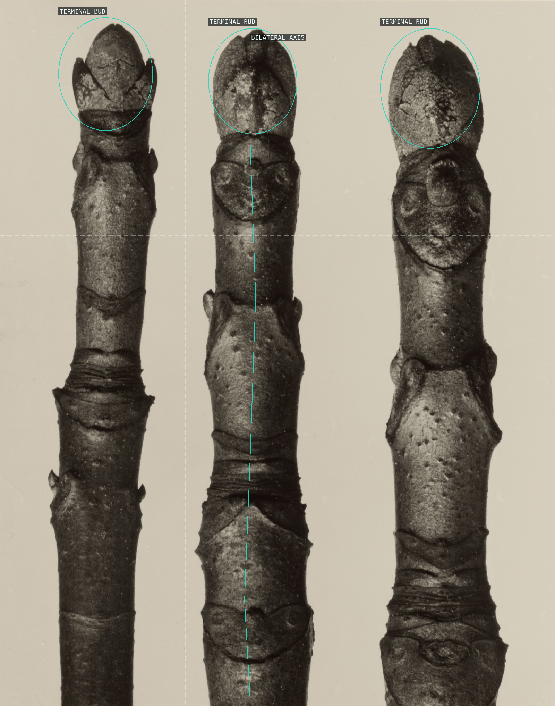
Comparative plate: three parallel specimens in serial rhythm, each a bilaterally symmetric bud-head crowning a node-ringed stem.
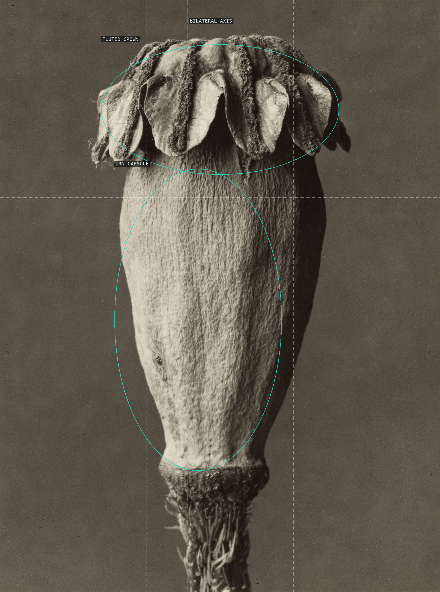
A bilaterally symmetric poppy capsule: a fluted radial crown bursts atop an ovoid urn, all organized on one vertical spine.

A fluted trunk on the vertical axis forks symmetrically and erupts into a crown of pointed buds — botany rendered as architecture.